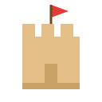
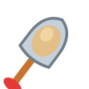
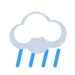
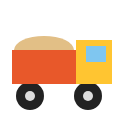
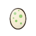
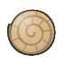

A sand tray for little hands. Every grain slides, piles and slumps like real sand, the phone's tilt moves it, and there are dinosaurs buried in it. This guide is for grown-ups; the sandbox itself needs no reading.
Getting started
- Open it on the phone and tap Add to Home Screen (Safari: Share button; Android: browser menu). It then opens full-screen with no browser bars, and works offline.
- Hold the phone the way your child will, then tap the big 🏖️ button. That position counts as "flat" for tilting.
- On iPhone, allow motion access when asked so tilting works.
- Hand it over. Everything is touch and pictures.
The toolbar
The row of round buttons along the bottom picks what a finger does on the sand. The chosen tool is shown in yellow.
Some buttons hold a group of tools. Tapping one picks the tool it shows and pops its group open above the bar; tap another picture to switch. The button then shows that tool until another is chosen. The groups are Sand tools (bucket, castle mould, shovel), Water (hose, rain), Colours and Stamps (including footprints).
Tools
Finger
Drag through the sand to dig a groove. Sand is pushed ahead of the finger into a ridge, the sides slump like real sand, and a fast flick sends grains flying. Keep scrubbing to uncover buried toys.
Bucket
Hold a finger down to pour a stream of sand. It piles up into a cone and avalanches down its sides. (The only tool that adds new sand.)

Castle mould
Touch the sand and an upside-down bucket appears under the finger. Move it where you like and let go: it presses down and lifts off a round tower, with sloping sides still ridged from the bucket, six chunky battlements and a few loose crumbs around its foot. Towers are packed damp sand, so they keep their walls until something knocks them, water undermines them or sand slides over them.
Build a big castle
One tap and a whole sandcastle rises out of the middle of the tray. It has:
- a moat full of water, fed by a spring so it stays full;
- a bridge with low side walls leading to a gatehouse between two towers;
- a crenellated outer wall with round corner towers;
- a taller inner wall with its own gate and towers;
- a square keep in the middle with a turret;
- little toothpick flags that flutter on every tower.
Knock a tower down and its flag topples. Dig a channel out of the moat and the water runs out, but the spring keeps topping it up. The wave washes the castle away. Tapping the button doesn't change the tool in use.

Shovel
Press to scoop up sand. Keep holding still and the scoop digs wider and deeper for about 1½ seconds: a dashed ring shows its edge and a yellow ring fills up, turning green with a pop at full size. Then drag the loaded shovel anywhere and let go to tip the sand out into a pile. No sand is lost or created.
Hose
Hold a finger down to spray water just past the fingertip. The first splashes blast a little crater; once water collects it fills up, so point it at a hole or moat to fill it. Water runs downhill, carves channels, sloshes when the phone tilts, and slowly soaks in, leaving dark damp sand.

Rain cloud
Hold a finger down and a little cloud rains on the sand around it. Raindrops dimple and darken the sand, and the water gathers in hollows.
Coloured dye
Pick red, orange, yellow, green, blue, purple, pink or rainbow (which changes colour as the finger moves), then rub the sand to stain it. Coloured sand keeps its colour wherever it goes: when it slides, gets dug, shovelled or stamped. The wave washes colours out.
Stamps
Turtle, starfish, shell, fish, crab and heart. Drag one straight off its button onto the sand, or pick one and touch the sand: the stamp lifts and follows the finger, then presses in where the finger lets go. A quick tap stamps on the spot. Imprints are packed firm, so they stay crisp until loose sand covers them.
Dinosaur footprints
Drag a finger and a dinosaur walks along it, leaving left-right three-toed prints. A low sun (see Settings) makes them stand out best.

Toy truck
Touch the sand and the truck drives towards the finger, steering as it goes. Its blade bulldozes a ridge of sand ahead of it and the back wheels leave tread tracks. It stays where it stops.
Desk fan
Puts a desk fan on the sand. Blow into the phone's microphone and the fan spins up and blows sand away from where it points: loose sand slides and hops downwind, piles into drifts and forms little ripples. The wind comes in gusts. Wet or packed sand resists, so a hosed-down castle survives.
- With the fan button chosen, drag the fan to move it, or touch anywhere else to point it that way.
- Drag it off the edge of the sandbox to put it away (this also switches the microphone off).
- The phone asks for microphone permission the first time. If there's no microphone, pressing and holding the fan runs it instead.
Wave
A wave washes across the tray and leaves it smooth, flat and wet. It also buries a new set of toys, washes out dye, and makes the phone's current position the new "flat" for tilting.
Dinosaur dig
Each round, four dinosaurs and two treasures are buried in the sand. Dig with a finger, scoop with the shovel, blast with the hose, drive the truck over them, or tilt the sand off them.


- When most of a toy is uncovered, dinosaurs roar (treasures chime), hop about and sparkle.
- The shelf in the top-left corner shows this round's toys as grey shadows; each fills in with colour when it's found.
- Find them all for confetti and a fanfare; the wave button then wiggles to offer a new dig.
- Change how deep they're buried, or turn them off, in Settings.
Tilt & shake
Tilt the phone far enough and sand slides downhill, piles against the low wall and shows the blue tray floor at the high end. Water sloshes too, even at small tilts. Shake the phone hard and the sand loosens and settles flatter.
How far it must tip is set by Tilt sensitivity. The phone's position when you tap 🏖️ or 🌊 counts as flat.
Grown-up settings
Press and hold the ⚙️ in the top-right corner for about a second (a yellow ring fills up). A quick tap does nothing, so little fingers won't open it. Settings are remembered on the phone. Close with Done, the ✕, or by tapping outside the panel.
Tilt & shake
On Off. Off keeps the sand still however the phone is held.
Tilt sensitivity
Low (default; flat sand slides at about 50°), Medium (about 42°), High (about 34°, like real sand). Piles and steep walls give way a little sooner.
Buried dinosaurs
Off no toys · Shallow easy finds · Medium · Deep thick sand, faint lumps · Hidden flat sand with no lumps at all. Changing it washes the tray and buries a new set.
Water in low spots (for moats)
Off Low High. Like digging near the sea: holes, trenches and moats dug deep enough fill with seep-in water and drain back if filled in. Low needs a deep dig; High fills even shallow ones.
Sun
Low long shadows that make prints and stamps stand out · Midday · High short shadows.
Background
Rocky (default) or Sky blue around the sandbox.
Sound
On Off.
Tips for little ones
- Keep them in the sandbox: on iPhone turn on Guided Access (Settings → Accessibility → Guided Access), then triple-click the side button while the sandbox is open. On Android use App pinning.
- Moat game: turn on Water in low spots, make a tower with the castle mould, and dig a ring around it. Or tap Build a big castle and drive the truck across the bridge.
- Siege! Build a big castle, set the sun to Low for long shadows, then let the fan, the hose or the rain have a go at it.
- Treasure hunt: set dinosaurs to Hidden for a real search; Shallow for the youngest.
- Wind tunnel: hose a castle (wet sand resists wind), then blow the fan at it and watch the dry sand drift away.
Troubleshooting
Tilting doesn't move the sand
- Check Tilt & shake is On, and try Tilt sensitivity: High; on Low the phone must tip about halfway to upright.
- On iPhone, motion access must be allowed: close the tab, reopen the sandbox and tap 🏖️ again to get the question.
- Tilt only works when the page is opened over https://.
The fan doesn't spin when blowing
- Allow microphone access when asked. If it was refused, allow it again in the browser's site settings, or press and hold the fan to run it.
- Blow straight at the bottom edge of the phone, where the microphone is.
Sound is quiet while the fan is out
Some iPhones lower the volume while the microphone is on. Drag the fan off the sandbox to switch the microphone off.
A change doesn't show up
The sandbox keeps a copy of itself for offline use. Close it and open it again (or reload twice) to pick up a new version.
It feels slow
The sandbox only works where sand is moving, and on slower phones it automatically does fewer physics steps per frame. Closing other apps helps; turning off Water in low spots and putting the fan away saves a little more.
Privacy
Everything runs on the phone. Nothing is sent anywhere, and there are no ads or tracking. The microphone is only on while a fan is on the sand, and is only used to measure how hard someone is blowing; nothing is recorded. Settings are saved on the phone only.